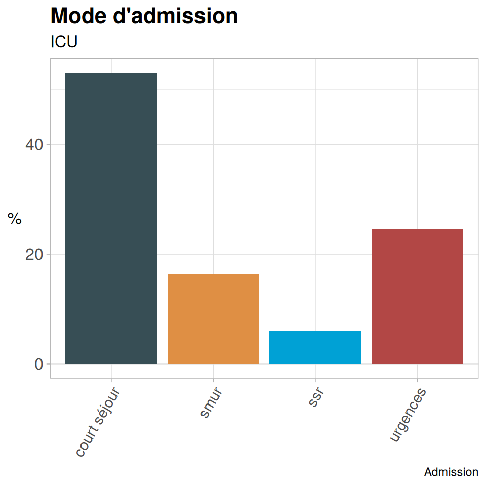
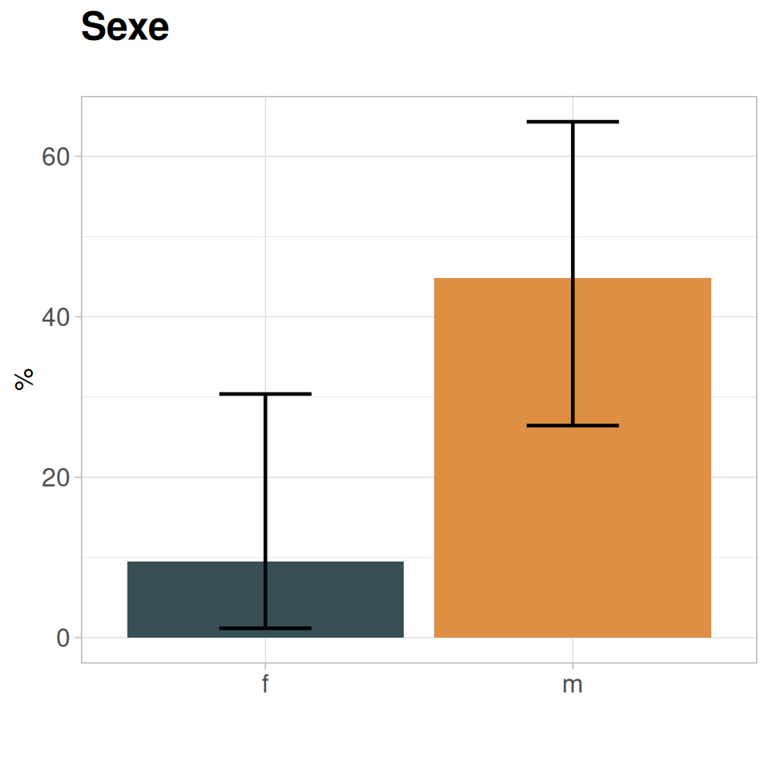
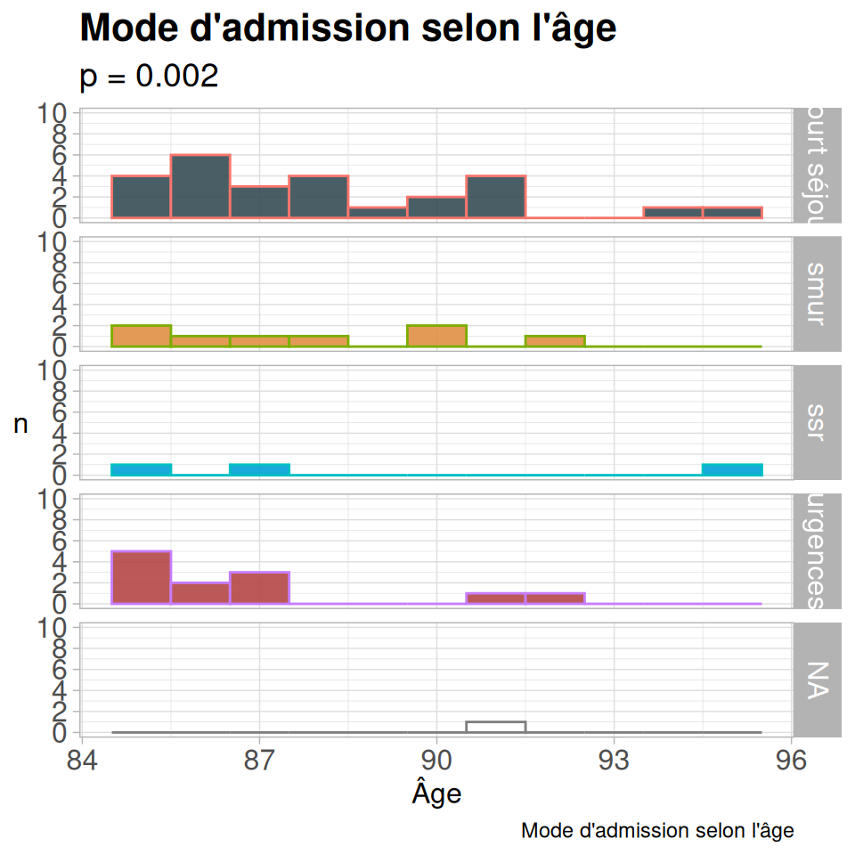
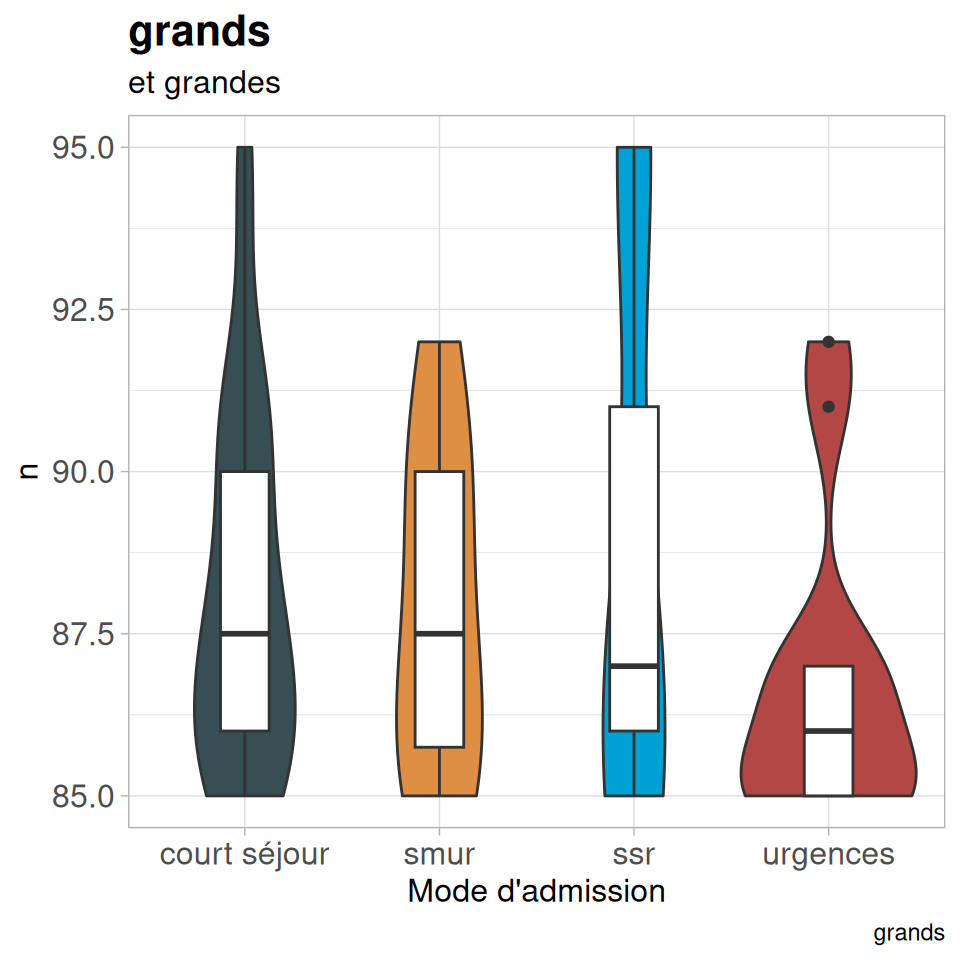

Installation
library(baseph)
#> Error in get(paste0(generic, ".", class), envir = get_method_env()) :
#> object 'type_sum.accel' not found
library(gtsummary)
library(tidyverse)
library(kableExtra)Nous allons déroulé un projet de recherche clinique tout simple à
partir du jeu de données patients contenu dans le package.
Ce jeu de données contient deux fichiers :
-
patientsavec les données (fictives) -
bnomqui contient des vignettes claires pour les variables : par exemple pour la variablesejourreasera affiché dans les tableaux, légendes etc. : Durée de séjour en réanimation.
Calcul du nombre de cas
C’est toujours la première étape. Plusieurs fonctions font ces
calculs pour les cas courants par exemple dans les packages
epiDisplay ou Hmisc.
Nous avons écrit ici une fonction pour les sondages, enquètes etc. sans test principal donc pas de calcul de puissance possible.
nbo <- nb.obs.ph(px = 0.5, ex = 0.1, np = 1e5)Le nombre de cas nécessaires pour une enquète avec une estimation des réponses pour les questions principales autour de 50 % (hypothèse la plus défavorable) & une marge d’erreur considérée comme acceptable de 10 % dans une grande population serait de 96 cas (calcul très discutable).
Randomisation
la fonction listrandphcorrespond juste à une mise en
forme de la fonction blockrand du package homonyme pour
générer des listes de randomisation par centre en blocs de taille
aléatoire. Elle génère plusieurs fichiers .csv : une feuille globale de
randomisation (pour le promoteur) & une feuille par centre.
listrandph(nbcent = 1, # Nombre de centre
nbtrait = 2, # nombre de traitements/classes (habituellement 2)
nbcas = 100 # Nombre de cas total prévu
)Mise en forme des tableaux
J’utilise habituellement le package gtsummary pour créer
mes tableaux. Les deux fonctions suivantes prennent un tableau, le
mettent en forme via kableExtra (pour les sorties en pdf)
& font l’export en .xls (optionnel).
Tabph
Tabph permet de fignoler l’aspect des tables générées par
gtsummary en particulie r;: Titre de l’entête au dessus des
catégories, mise en gras des titres des variables,ajout de diverses
colonnes :
-p-value - colonne total colonne des effectifs par variable.
Choix du type de tests utilisés (paramétriques ou non).
Export en kableExtra
pexptabphprépare le tableau sans régler la largeur (pour des tableaux qui tiennent sans problème dans la page), possibilité delongtable.gexptabphadapte le tableau pour tenir dans la page en largeur (en jouant sur la taille de police etc.) mais on perd la possibilité delongtable(limitation technique).
patients |>
dplyr::select(sexe, age, escarre, lieudevie1) |>
tbl_summary(by = escarre) |>
tabph(nomv = "Escarre", # Titre des colonnes
normx = TRUE # Tests paramétriques
) |>
pexptabph(exp = FALSE, # pas d'export .xls
lg = FALSE) # pas de longtable| N |
Total N = 50 |
non N = 35 |
oui N = 15 |
p-value | |
|---|---|---|---|---|---|
| sexe | 50 | ||||
| f | 21 (42%) | 19 (54%) | 2 (13%) | ||
| m | 29 (58%) | 16 (46%) | 13 (87%) | ||
| age | 50 | 87 (86, 90) | 87 (85, 90) | 87 (86, 91) | |
| lieudevie1 | 46 | ||||
| Avec la famille | 7 (15%) | 6 (19%) | 1 (6.7%) | ||
| Domicile, seul | 16 (35%) | 12 (39%) | 4 (27%) | ||
| EHPAD | 3 (6.5%) | 2 (6.5%) | 1 (6.7%) | ||
| En couple | 15 (33%) | 8 (26%) | 7 (47%) | ||
| Maison de retraite | 5 (11%) | 3 (9.7%) | 2 (13%) | ||
| Unknown | 4 | 4 | 0 | ||
| 1 n (%); Median (Q1, Q3) |
Graphiques
barsimpleph & bardecph
Graphique en barre simple.
barsimpleph(dfx = patients, # tableau de données
varx = admission, # Variable à étudier
titre = "Mode d'admission",
stitre = "ICU", # sous-titre
capt = "Admission", # légende
lab = "admin", # label pour un lein éventuel
angle = 60) # angle d'affichage des niveaux sur l'axe x
bardecph est le même graphique avec les données
présentées en ordre décroissant.
barconfph
Graphique en barre d’une donnée numérique découpée selon une variable factorielle avec les intervalles de confiance.
barconfph(dfx = patients, # tableau de données
varnum = igs2, # variable numérique
vartri = admission, # variable factorielle
titre = "IGS II vs provenance", #
stitre = "en ICU", tx = "Mode d'admission", # sous titre
ty = "IGS II", # titre des y
cap = "Texte écrit petit", # légende
angle = 30 # angle d'affichage des niveaux sur l'axe x
)
bardeuxph
Barplot pour 2 variables factorielles : une variable de tri, une variable en % par modalité de tri
bardeuxph(patients,
lieudevie1, # Variable en %
admission, # variable de tri
titre = "Escarre & mode d'admission", # titre
stitre = "%", # sous titre
xtitre = "Mode d'admission", # titre des x
ltitre = "Escarre", # titre de lé légende
angle = 20, # angle d'affichage des niveaux sur l'axe x
lab = "aa" # label
)Barouiph
Barplot pour deux données factorielles : une de tri (axe x) & une qui doit être à deux niveaux avec affichage d’un seul niveau (par exemple réponse en oui/non où on affiche que les oui) avec les intervalles de confiance.
barouiph(dfx = patients, varx =escarre, testx =sexe, valx = "oui", titre = "Sexe")
histmultiph
Graphique en plusieurs histogrammes superposés, pratique pour bien visualiser les variations d’une distribution selon une modalité.
histmultiph(dfx = patients,
varx= admission, # bariables de tri, factorielle
varn = age, # variable numérique
tit = "Mode d'admission selon l'âge", # titre
stit = 0.002, # p-value
titx = "Âge", # titre de l'axe x
bin = 1 # largeur des barres
)
lollipopph
Tracé d’un graphique “lollipop” de distribution d’une variable factorielle avec possibilité de mise en évidence d’un ou plusieurs facteurs.
vioboxph
Graphique en violon + boxplot
vioboxph(dfx = patients, #
varx = admission, # Variable de tri, factorielle
varnum = age, # variable numérique
titre = "grands", # titre
stit = "et grandes", # sous titre
titx = "Mode d'admission" # titre de l'axe x
)
raincloudph
Graphique en raincloud (densité + boxplot + nuage de points) pour une variable numérique & une variable factorielle de tri.
raincloudph(df = patients, vcat = admission, vnum = igs2, titre = "IGS2 vs adm", titcat = "Adm", titnum = "IGS 2", adj = 1)